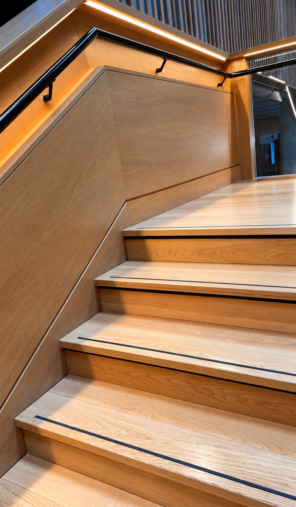
Architectural photography
Library Interior
Layered geometry, repeated vertical lines, and balanced ambient lighting create depth across multiple floors.
Original photography | Creative editing | Visual storytelling. A personal collection of 11 photographs capturing architecture, city life, natural light and everyday moments. Select any image to view the full photograph.

Layered geometry, repeated vertical lines, and balanced ambient lighting create depth across multiple floors.
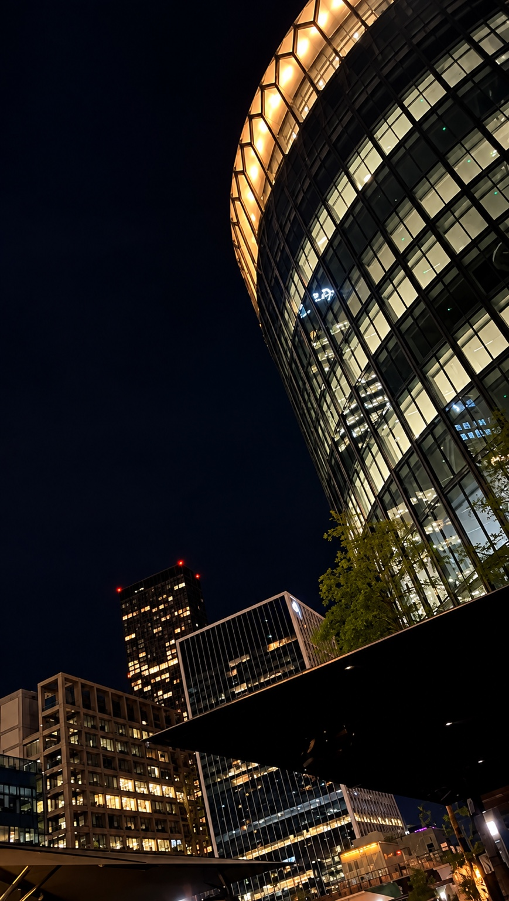
A dramatic upward angle contrasts the illuminated glass facade with the dark sky.
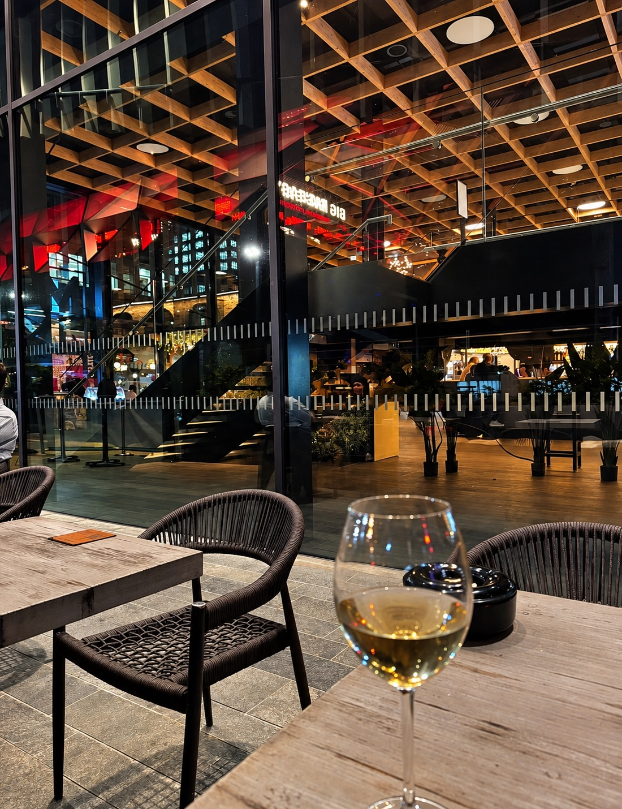
A layered view through glass combines warm interior lighting, architectural structure, and reflections.
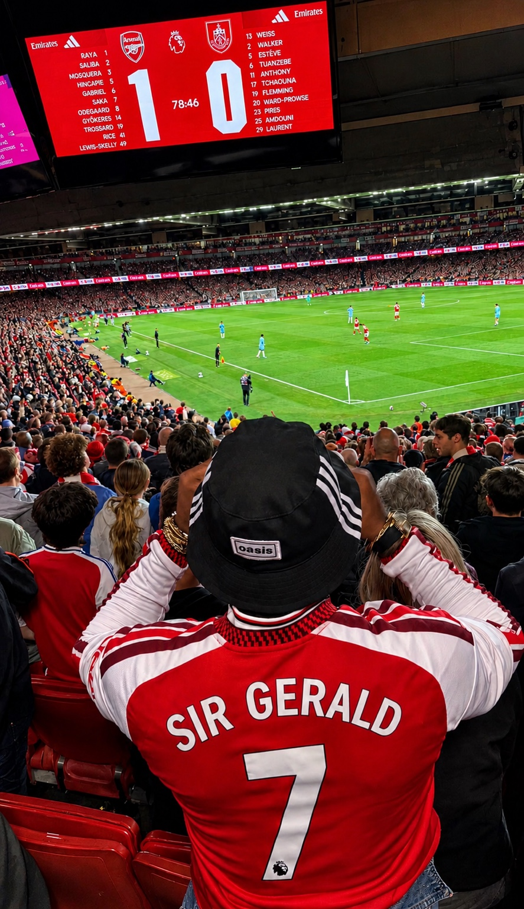
The foreground supporter anchors a wider scene of the crowd, pitch, and stadium atmosphere.
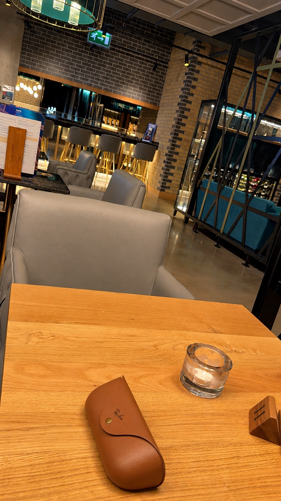
Strong diagonal handrails and repeated stair edges guide the eye through the frame.
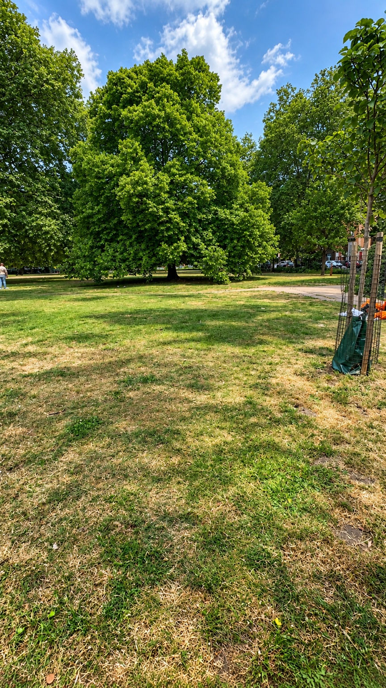
A prominent tree and open lawn contrast against a bright sky with textured clouds.
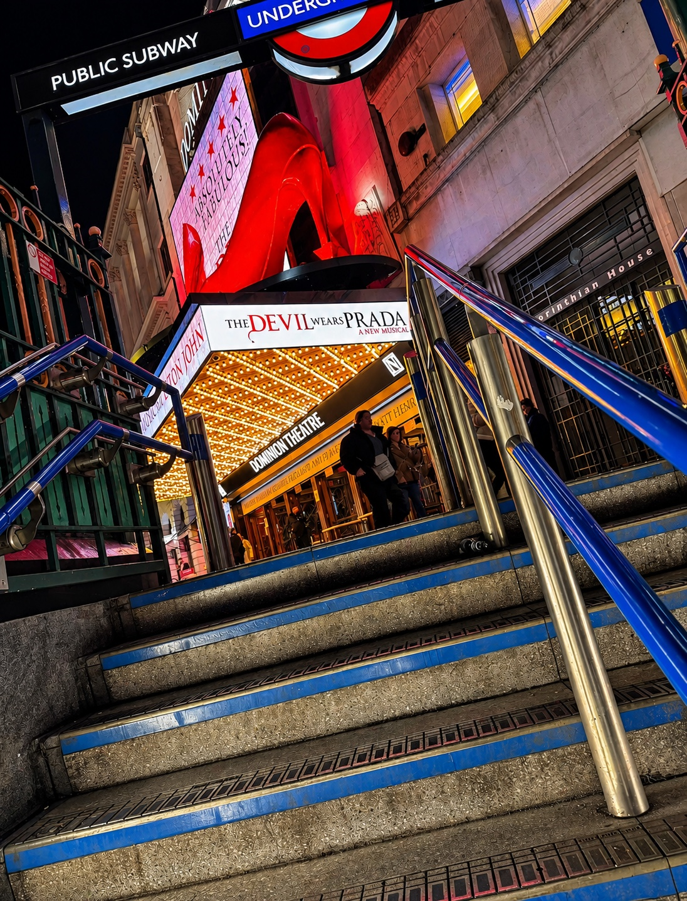
Red signage, blue railings, and warm marquee lighting create a dynamic colour contrast.
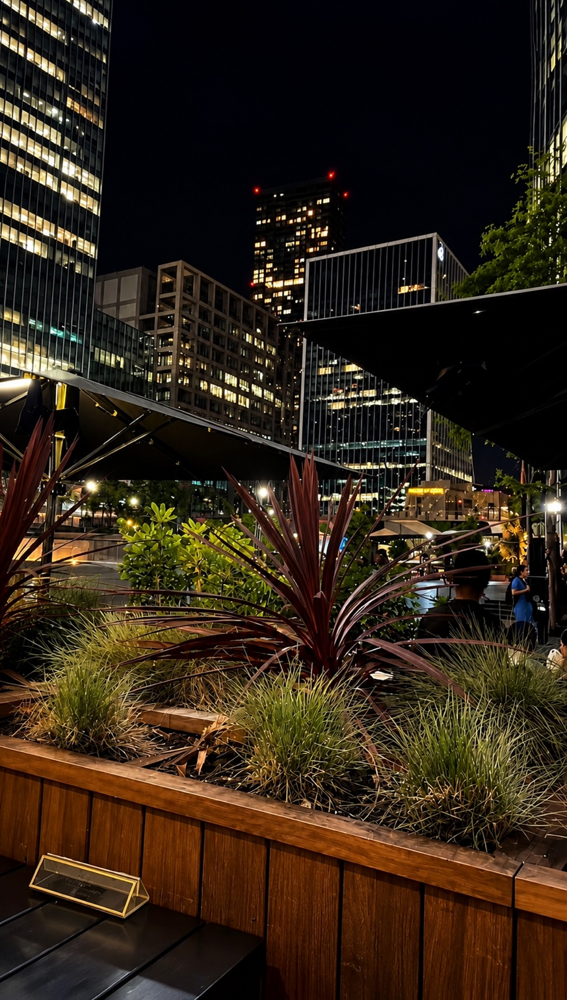
Foreground planting provides a natural counterpoint to illuminated office buildings.
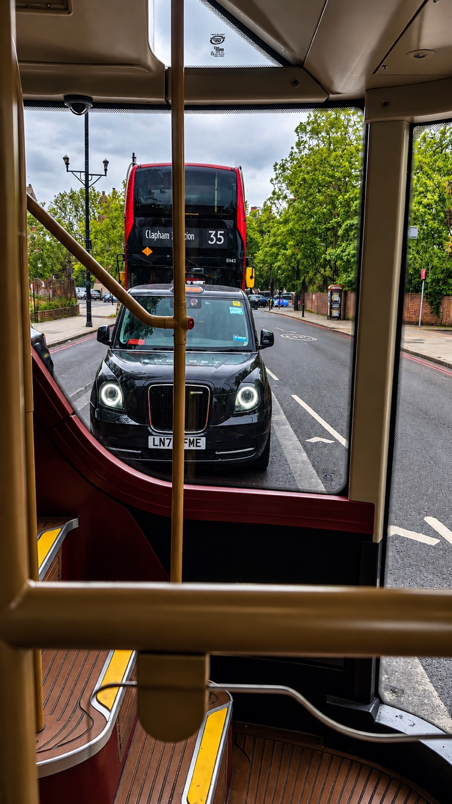
The bus interior frames an everyday London street scene with layered depth.
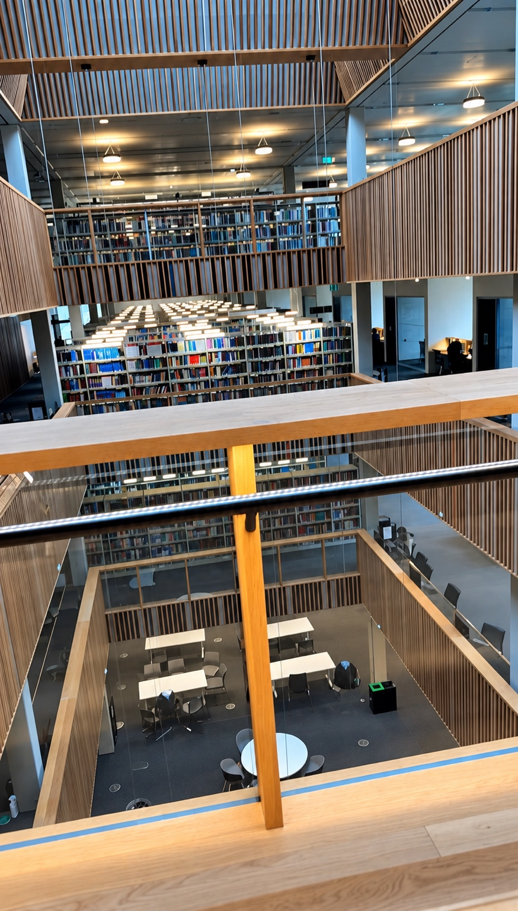
A close foreground still life adds texture and warm tonal contrast to the café setting.
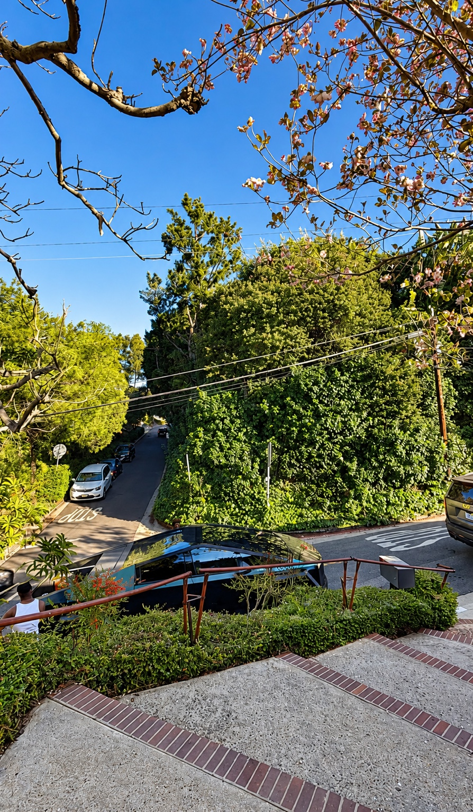
Flowering branches frame a bright sky and a sloping residential street.